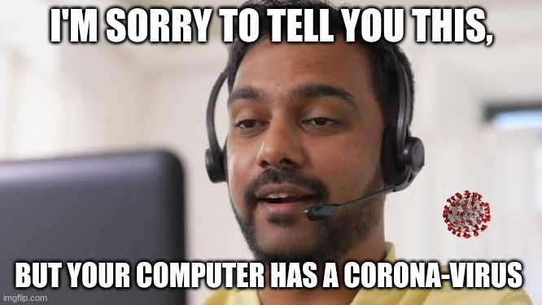

Every day, hundreds of every day citizens around the world, obliviouse to the invisible waves of malevolant power, suffer from being a vitim of identity theft. They wont event know that is happened or even how. The main cause is due to their awarness, and a total disregard or care to know more. Most people think that they have nothing to hide, so they shoiuldnt care, but what if you were being targeted? What if your name just happened to be on a list, and then a hacker decided to see what they could get from you? Would you care then? If so, What would you do about it?
Below, i will explain a few steps thatyou can take right now, that will help you to remain secure from and future vulnerabilities. These actions are nessesary, not onle for you, but for your family and the people that you interact with on a daily basis. When a hacker can get ahold of the data on your phone, computer, or anyother source of personal information, they most often will use the contacts and people you are connected to in order to scam, or even hack as well. the impact can range from annoying spam and phone calls from a friendly indian man, named John James, that works as an overly helpful microsoft customer support technician. Or is could be that pretty sounding wonam that works for Paypal, Calling to let you know that you have recieved a refund and she wants to help you get that money back in to your bank! WOW! WHAT A DEAL! RIGHT?!
These are scammers, and they will lie to you and do anything to get your money. They are some of the recipients of the information that is often gathered from a security breach. check out below for tips to protect your self.
There are ton of options,This VPN is FREE And Its easy to set up.
Cookies from many sites,are used to collect data from you and most of the time you wont even know it. CLICK ME for a guide on how to do just that!
they will store and encrypt all your accounts and passwords
Ditch your everyday Gmail, Yahoo, or anny other Big Name email company. They all are known for and have been involved in HUGE data breaches, They also collect data and use it for "analasys" at their partnered Data science companies for profiling. ProtonMailIs a great option if your looking for encrypted and private email.